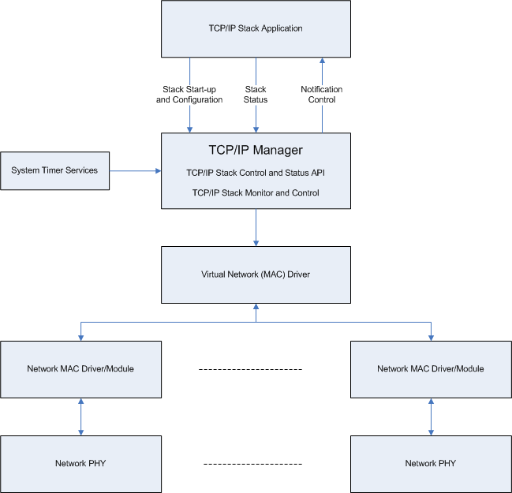
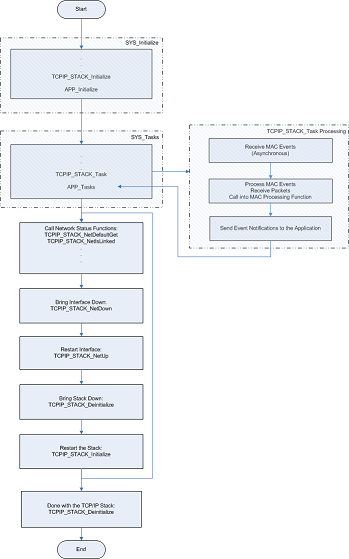

1.2.6.1 Manager Module
The TCP/IP manager provides access to the stack initialization, configuration and status functions.
It also process the packets received from different network interfaces (MAC drivers) and dispatches them based on their type to the proper higher_layers of the stack.
How the Library Works
The Manager module of the TCP/IP stack is the central module in the stack. It is this module that allows the client to configure and initialize the stack and also to get current status and parameters of the network interfaces that the stack supports.
The stack manager controls the communication to the underlying virtual MAC driver that implements the interface to a specific network channel. The various network interfaces that the TCP/IP stack supports are brought up or torn down by the stack manager in response to the stack client commands.
The manager is also responsible for providing the TCP/IP client with notifications of the events that occur in the stack at the network interface level. A dynamic registration mechanism is provided for this.
Another important functionality of the stack manager is the dispatch of the incoming network packets. The manager is notified by the underlying interface drivers of the traffic related event (transmit, receive, errors, etc.) As a response to those events the manager gets the pending receive packets from the virtual MAC driver and, based on their type, dispatches them to the appropriate higher level protocol for further processing (IPv4, ARP, IPv6).
As part of the event notification provided by the MAC driver the TCP/IP stack manager calls back into the MAC driver when this one needs processing time and can maintain statistics counters, link status, etc.
The MPLAB Harmony framework on the system running the TCP/IP stack interfaces to the stack manager mainly by using three functions, TCPIP_STACK_Initialize and TCPIP_STACK_Deinitialize for TCP/IP stack initialization, and TCPIP_STACK_Task for periodic processing and the advance of the stack state machine.
The stack is capable of running either under an Operating System (RTOS) or in a bare-metal environment. When running in a bare-metal environment a "cooperative multi-tasking" approach is needed by the TCP/IP stack, meaning that control has to reach the TCPIP_STACK_Task function. That is the system will need to make periodic calls to this function which allows the TCP/IP stack to dequeue incoming packets and the corresponding state machines in the stack to advance. The application has to be aware that it cannot monopolize the processor for long periods of time, and needs to relinquish control so that the system loops perform their tasks.
In an RTOS environment it is preferred to have the stack manager run in its own thread. This thread will be blocked waiting for network interface events and when such an event occurs it will wake up and process the data. This is a more efficient way of using the CPU resources.
Refer to MPLAB Harmony Framework Reference for information on configuring the MPLAB Harmony framework to run in a RTOS or bare-metal environment.
Core Functionality
The following diagram provides an overview for the operation and use of the Manager module in a typical MPLAB Harmony framework (bare-metal, non-OS environment).
The TCP/IP stack is initialized as a part of the system initialization by a call to TCPIP_STACK_Initialize. By configuring the stack, the application can pass run-time initialization data to the stack to select both the network parameters of the interfaces (network addresses, masks, physical addresses, NetBIOS names, DHCP operation, etc.) and the parameters for the modules contained in the stack (TCP, UDP, ARP, IPv4, IPv6, etc.).
Once the stack is initialized the application can use the stack manager calls to inquire about the stack current settings (current addresses obtained by DHCP or IPv6 advertisements messages, etc.), to check the physical link status or to set new parameters to the stack.
It should be noted that different interfaces can be stopped and restarted dynamically (TCPIP_STACK_NetDown, TCPIP_STACK_NetUp) without the stack being killed. When a particular interface is brought up only the network parameters for that interface need to be supplied (no parameters for the TCP/IP stack modules are needed).
The entire stack can be stopped and restarted (TCPIP_STACK_Deinitialize, TCPIP_STACK_Initialize). Reinitializing the stack allows the stack initialization with a complete new set of network and/or module parameters.
The stack processing is done in the TCPIP_STACK_Task function. As explained in the previous paragraph, processing time is required by the stack, meaning that periodic calls have to be made by the system/framework to the TCPIP_STACK_Task function. When execution reaches this function the stack maintains and advances its internal state machine. The most important part of this is the processing of the events that are reported by the underlying MAC drivers (through the use of the virtual MAC driver, which provides an interrupt signaling/event notification mechanism). As a response to the MAC events, the stack manager will retrieve packets from the internal MAC receive queues and dispatch them for processing. It will also call into MAC processing functions if required and provide processing for the stack modules that are the recipients of the dispatched network packets. The stack manager will also notify the application of the network events if the application dynamically registered an event notification handler with the stack.
It should be noted that the stack manager also requires a periodic tick signal for which it uses the MPLAB Harmony system timer services (see Timer System Service Library).
If the application no longer uses the TCP/IP stack, it is important that it calls the TCPIP_STACK_Deinitialize function. This function closes any open network connections (sockets, etc.), closes the underlying MAC and PHY drivers and all of the modules in the stack, and frees all of the resources that were internally allocated by the stack as part of the initialization and run-time processing.
Library Interface
| Name | Description |
|---|---|
| Macros | |
| TCPIP_PACKET_LOG_ENABLE | Enable the packet logger Simple module that logs the packets as they fly through the stack from creation until acknowledged Default is disabled |
| TCPIP_PKT_LOG_SIZE | Number of log entries, if the packet logger is enabled Each entry takes approx 24 bytes |
| TCPIP_STACK_ALIAS_INTERFACE_SUPPORT | Enable support for alias interfaces An alias interface uses the physical interface of another network interface. It allows multiple IP addresses for a host on the same interface, for example. Default is disabled. |
| TCPIP_STACK_CALLOC_FUNC | Stack allocation function, calloc style This is the function the stack will call to allocate memory needed for its own heap: TCPIP_STACK_DRAM_SIZE. Use standard C library 'calloc' as a default |
| TCPIP_STACK_COMMAND_ENABLE | TCP/IP commands support - requires the system console and the command processor |
| TCPIP_STACK_CONFIGURATION_SAVE_RESTORE | This setting enables the configuration get/set operations: TCPIP_STACK_ModuleConfigGet, TCPIP_STACK_NetConfigGet, TCPIP_STACK_NetConfigSet If true, the functionality is built in and could be used by the application If false, these functions do not exist and the generated code is smaller |
| TCPIP_STACK_DOWN_OPERATION | This setting enables the TCPIP_STACK_Deinitialize() operation If this symbol is false, then the TCPIP_STACK_Deinitialize is not built in Useful when stack stop and restart is not needed at run time - smaller code footprint for the TCP/IP stack. |
| TCPIP_STACK_DRAM_DEBUG_ENABLE | Enable debugging of an allocation call that failed. If the system debug is enabled (SYS_DEBUG_ENABLE) the stack will issue a warning message at the system debug channel. |
| TCPIP_STACK_DRAM_RUN_LIMIT | The minimum amount of dynamic memory left for run time allocation by the stack (IP, UDP, etc) This is just a warning threshold. If after all the modules are initialized the amount of memory available in the TCPIP heap is less then TCPIP_STACK_DRAM_RUN_LIMIT then a warning will be displayed (if the debug channel is enabled) For proper operation there should be always a heap reserve of at least few KB. |
| TCPIP_STACK_DRAM_SIZE | The total amount of internal dynamic memory heap that the TCPIP stack will create at start up. This is the size of the internal heap, relevant only for the TCPIP_STACK_USE_INTERNAL_HEAP |
| TCPIP_STACK_DRAM_TRACE_SLOTS | Enable tracing of the allocated memory by each module. The stack will trace all the memory allocated by a module and various statistics. #define TCPIP_STACK_DRAM_TRACE_ENABLE Number of trace slots to be used. There is on slot needed per module that allocates memory from the heap. |
| TCPIP_STACK_FREE_FUNC | Stack deallocation function, free style This is the function the stack will call for freeing the allocated memory when the stack is deinitialized. Use standard C library 'free' as a default |
| TCPIP_STACK_IF_UP_DOWN_OPERATION | This setting enables the TCPIP_STACK_NetUp/TCPIP_STACK_NetDown operations When enabled, these functions are built in and can be used by an app Useful when interfaces do not need restarting at run time - results in smaller code footprint. |
| TCPIP_STACK_INTERFACE_CHANGE_SIGNALING | This setting enables/disables the stack signaling when an interface address changes This could be triggered by the DHCP kicking into action, by ZCLL or other address service, or simply by the user changing the IP address of an interface If it is enabled, the socket modules (UDP, TCP) will be notified and they will disconnect their sockets that are currently connected on that interface that has changed. User can be notified by registering an event handler either with socket events or with the general stack signaling mechanism Default setting is true |
| TCPIP_STACK_INTERNAL_HEAP_POOL_EXPANSION_SIZE | The size of the expansion heap for a TCPIP_STACK_USE_INTERNAL_HEAP_POOL This is the amount of heap allocated besides the size resulting from the pool entries and allows expanding at run time. How a specific entry expands is controlled per entry If set to 0, then there is no expansion at run time. |
| TCPIP_STACK_MAC_DOWN_OPERATION | This setting specifies the behavior of stack regarding the MAC and PHY drivers when the TCPIP_STACK_DOWN_OPERATION == false in the situation where the stack initialization failed and the stack cannot be started. If true, the MAC (and the corresponding PHY) TCPIP_MAC_Deinitialize will be called. This operation is supposed to exist and this setting will conserve power. If false, the TCPIP_MAC_Deinitialize waon't be called and the code footprint could be smaller. The TCPIP_MAC_Deinitialize operation, which is expensive, could be unimplemented. |
| TCPIP_STACK_MALLOC_FUNC | Stack allocation function, malloc style This is the function the stack will call to allocate memory needed for its own heap: TCPIP_STACK_DRAM_SIZE. Use standard C library 'malloc' as a default |
| TCPIP_STACK_SECURE_PORT_ENTRIES | The number of entries in the internally maintained secure port table This table is populated at stack initialization with default well-known port values Currently this number should be >= 10 |
| TCPIP_STACK_SUPPORTED_HEAPS | Number of heap types at run time to enable debugging, statistics, trace on, etc. Currently only 1 heap type is supported at run time, one of: internal heap, internal pool and external |
| TCPIP_STACK_TICK_RATE | TCPIP task processing rate, in milliseconds. The TCP/IP task will require a timer event with this rate for maintaining its own state machine, processing timeouts for all modules, or dispatching the RX traffic if the interrupt operation is not enabled, etc. The lower this value (higher the frequency) the higher the priority of the TCP/IP stack and a higher performance can be obtained. |
| TCPIP_STACK_USE_ANNOUNCE | Microchip Embedded Ethernet Device Discoverer server/client |
| TCPIP_STACK_USE_BERKELEY_API | Berkeley Sockets APIs are available |
| TCPIP_STACK_USE_DHCP_CLIENT | Dynamic Host Configuration Protocol client for obtaining IP address and other parameters |
| TCPIP_STACK_USE_DHCP_SERVER | DHCP server |
| TCPIP_STACK_USE_DNS | Domain Name Service Client for resolving hostname strings to IP addresses |
| TCPIP_STACK_USE_DNS_SERVER | Domain Name Service Server for redirection to the local device |
| TCPIP_STACK_USE_EVENT_NOTIFICATION | Event Notifications Options ======================================================================= This setting enables the stack event notification. It allows the MAC drivers to report their TX/RX related events to the stack manager but also allows users of the stack to register notification handler so that they are notified of specific events. The operation of the stack is more efficient when event notification is turned on and this is how the stack is designed to run. Always leave this setting defined. The choice for selecting this parameter will eventually be removed. Maintained for backward compatibility. |
| TCPIP_STACK_USE_FTP_SERVER | File Transfer Protocol |
| TCPIP_STACK_USE_HTTP_NET_SERVER | HTTP NET server with POST, Cookies, Authentication, etc. and encryption support |
| TCPIP_STACK_USE_ICMP_CLIENT | Ping query capability |
| TCPIP_STACK_USE_ICMP_SERVER | Ping response capability |
| TCPIP_STACK_USE_ICMPV6_SERVER | enable IPv6 ICMP functionality |
| TCPIP_STACK_USE_INTERNAL_HEAP | define TCPIP_STACK_USE_EXTERNAL_HEAP define TCPIP_STACK_USE_INTERNAL_HEAP_POOL |
| TCPIP_STACK_USE_IPERF | Enable the Iperf module for standard network benchmarking |
| TCPIP_STACK_USE_IPV4 | enable IPv4 functionality |
| TCPIP_STACK_USE_IPV6 | enable IPv6 functionality |
| TCPIP_STACK_USE_LLDP | LLDP limited beta functionality - not supported through MHC configuration |
| TCPIP_STACK_USE_NBNS | NetBIOS Name Service Server for responding to NBNS hostname broadcast queries |
| TCPIP_STACK_USE_REBOOT_SERVER | Module for resetting this PIC remotely. Primarily useful for a Bootloader. |
| TCPIP_STACK_USE_SMTPC | Simple Mail Transfer Protocol for sending email with encryption support |
| TCPIP_STACK_USE_SNMP_SERVER | Simple Network Management Protocol v2C Community Agent |
| TCPIP_STACK_USE_SNMPV3_SERVER | SNMP v3 agent |
| TCPIP_STACK_USE_SNTP_CLIENT | Simple Network Time Protocol for obtaining current date/time from Internet |
| TCPIP_STACK_USE_TCP | Enable the TCP module |
| TCPIP_STACK_USE_TELNET_SERVER | Telnet server |
| TCPIP_STACK_USE_TFTP_CLIENT | TFTP client functionality |
| TCPIP_STACK_USE_UDP | Enable the UDP module |
| TCPIP_STACK_USE_ZEROCONF_LINK_LOCAL | Zeroconf IPv4 Link-Local Addressing; |
| TCPIP_STACK_USE_ZEROCONF_MDNS_SD | Zeroconf mDNS and mDNS service discovery |
| TCPIP_STACK_USER_NOTIFICATION | This setting enables the reporting of the events by the stack to the user using the notification system If enabled, then TCPIP_STACK_HandlerRegister and TCPIP_STACK_HandlerDeregister functions are compiled in and can be used If disabled, these functions do not exist and cannot be used/called Relevant only when TCPIP_STACK_USE_EVENT_NOTIFICATION is enabled |
| TCPIP_STACK_EXTERN_PACKET_PROCESS | This setting enables/disables the processing of the RX packets by an external handler The user of the stack can register an external function to process the incoming packets If true, the functionality is built in and could be used by the application If false, the functionality does not exist and the generated code is slightly smaller |
| Helper Functions | |
| TCPIP_Helper_FormatNetBIOSName | Formats a string to a valid NetBIOS name. |
| TCPIP_Helper_htonl | This is function TCPIP_Helper_htonl. |
| TCPIP_Helper_htonll | This is function TCPIP_Helper_htonll. |
| TCPIP_Helper_htons | This is function TCPIP_Helper_htons. |
| TCPIP_Helper_IPAddressToString | Converts an IPV4 address to an ASCII string. |
| TCPIP_Helper_IPv6AddressToString | Converts an IPv6 address to a string representation. |
| TCPIP_Helper_IsBcastAddress | This is function TCPIP_Helper_IsBcastAddress. |
| TCPIP_Helper_IsMcastAddress | This is function TCPIP_Helper_IsMcastAddress. |
| TCPIP_Helper_IsPrivateAddress | Detects a private (non-routable) address. |
| TCPIP_Helper_MACAddressToString | Converts a MAC address to a string. |
| TCPIP_Helper_ntohl | !defined(_mips_) |
| TCPIP_Helper_ntohll | This is function TCPIP_Helper_ntohll. |
| TCPIP_Helper_ntohs | This is function TCPIP_Helper_ntohs. |
| TCPIP_Helper_SecurePortGetByIndex | Returns the secure port belonging to a specified index. |
| TCPIP_Helper_SecurePortSet | Sets the required port secure connection status. |
| TCPIP_Helper_StringToIPAddress | Converts an ASCII string to an IPV4 address. |
| TCPIP_Helper_StringToIPv6Address | Converts a string to an IPv6 address. |
| TCPIP_Helper_StringToMACAddress | Converts a string to an MAC address. |
| TCPIP_Helper_TCPSecurePortGet | Checks if the required TCP port is a secure port. |
| TCPIP_Helper_UDPSecurePortGet | Checks if the required UDP port is a secure port. |
| TCPIP_Helper_Base64Decode | Helper function to decode a Base-64 encoded array. |
| TCPIP_Helper_Base64Encode | Helper function to encode to Base-64. |
| Task and Initialize Functions | |
| TCPIP_STACK_HandlerDeregister | Deregisters an event notification handler. |
| TCPIP_STACK_HandlerRegister | Sets a new event notification handler. |
| TCPIP_MODULE_SignalFunctionDeregister | Deregisters a signal function for a stack module. |
| TCPIP_MODULE_SignalFunctionRegister | Registers a new signal function for a stack module. |
| TCPIP_MODULE_SignalGet | Returns the current signals for a TCP/IP module. |
| TCPIP_STACK_VersionGet | Gets the TCP/IP stack version in numerical format. |
| TCPIP_STACK_VersionStrGet | Gets the TCP/IP stack version in string format. |
| TCPIP_STACK_Task | TCP/IP Stack task function. |
| TCPIP_STACK_Deinitialize | Stack deinitialization function. |
| TCPIP_STACK_Initialize | Stack initialization function. |
| TCPIP_STACK_MACObjectGet | Returns the network MAC driver object of this interface. |
| TCPIP_STACK_PacketHandlerDeregister | Deregisters a previously registered packet handler. |
| TCPIP_STACK_PacketHandlerRegister | Sets a new packet processing handler. |
| Network Status and Control Functions | |
| TCPIP_STACK_IndexToNet | Network interface handle from interface number. |
| TCPIP_STACK_NetBIOSName | Network interface NetBIOS name. |
| TCPIP_STACK_NetBiosNameSet | Sets network interface NetBIOS name. |
| TCPIP_STACK_NetDefaultGet | Default network interface handle. |
| TCPIP_STACK_NetDefaultSet | Sets the default network interface handle. |
| TCPIP_STACK_NetHandleGet | Network interface handle from a name. |
| TCPIP_STACK_NetIndexGet | Network interface number from interface handle. |
| TCPIP_STACK_NetMask | Network interface IPv4 address mask. |
| TCPIP_STACK_NetNameGet | Network interface name from a handle. |
| TCPIP_STACK_NumberOfNetworksGet | Number of network interfaces in the stack. |
| TCPIP_STACK_EventsPendingGet | Returns the currently pending events. |
| TCPIP_STACK_ModuleConfigGet | Get stack module configuration data. |
| TCPIP_STACK_NetMACIdGet | Get the MAC ID of the network interface. |
| TCPIP_STACK_NetMACStatisticsGet | Get the MAC statistics data. |
| TCPIP_STACK_InitializeDataGet | Get the TCP/IP stack initialization data. |
| TCPIP_STACK_NetMulticastGet | Default multicast network interface handle. |
| TCPIP_STACK_NetMulticastSet | Sets the default multicast network interface. |
| TCPIP_STACK_NetGetType | Gets the network interface type: primary, alias, etc. |
| Network Up/Down/Linked Functions | |
| TCPIP_STACK_NetDown | Turns down a network interface. |
| TCPIP_STACK_NetIsLinked | Gets the network interface link status. |
| TCPIP_STACK_NetIsUp | Gets the network interface up or down status. |
| TCPIP_STACK_NetUp | Turns up a network interface. As part of this process, the corresponding MAC driver is initialized. |
| TCPIP_STACK_NetAliasNameGet | Network interface alias name from a handle. |
| TCPIP_STACK_NetIsReady | Gets the network interface configuration status. |
| TCPIP_STACK_NetMACRegisterStatisticsGet | Get the MAC statistics register data. |
| Network Address Status and Control Functions | |
| TCPIP_STACK_NetAddress | Network interface IPv4 address. |
| TCPIP_STACK_NetAddressBcast | Network interface broadcast address. |
| TCPIP_STACK_NetAddressDnsPrimary | Network interface DNS address. |
| TCPIP_STACK_NetAddressDnsPrimarySet | Sets network interface IPv4 DNS address. |
| TCPIP_STACK_NetAddressDnsSecond | Network interface secondary DNS address. |
| TCPIP_STACK_NetAddressDnsSecondSet | Sets network interface IPv4 secondary DNS address. |
| TCPIP_STACK_NetAddressGateway | Network interface IPv4 gateway address. |
| TCPIP_STACK_NetAddressGatewaySet | Sets network interface IPv4 gateway address. |
| TCPIP_STACK_NetAddressMac | Network interface MAC address. |
| TCPIP_STACK_NetAddressSet | Sets network interface IPv4 address. |
| TCPIP_STACK_NetIPv6AddressGet | Gets network interface IPv6 address. |
| TCPIP_STACK_NetAddressMacSet | Sets network interface MAC address. |
| TCPIP_STACK_Status | Provides the current status of the TCPIP stack module. |
| Network Structure Storage Functions | |
| TCPIP_STACK_NetConfigGet | Get stack network interface configuration data. |
| TCPIP_STACK_NetConfigSet | Restores stack network interface configuration data. |
| Heap Functions | |
| TCPIP_STACK_HEAP_FreeSize | Returns the size of the space currently available in the heap. |
| TCPIP_STACK_HEAP_LastError | Returns the last error encountered in a heap operation and clears the value of the last error variable. |
| TCPIP_STACK_HEAP_MaxSize | Returns the maximum size of a block that can be currently allocated from this heap. |
| TCPIP_STACK_HEAP_Size | Returns the size of the heap. |
| TCPIP_STACK_HeapHandleGet | Returns the current TCP/IP stack heap handle. |
| TCPIP_STACK_HEAP_HighWatermark | Returns the current heap watermark. |
| Data Types and Constants | |
| TCPIP_NET_HANDLE | Defines a network interface handle. |
| TCPIP_EVENT | Defines the possible TCPIP event types. |
| TCPIP_EVENT_HANDLE | Defines a TCPIP stack event handle. |
| TCPIP_STACK_EVENT_HANDLER | Pointer to a function(handler) that will get called to process an event. |
| TCPIP_MODULE_SIGNAL | Lists the signals that are generated by the TCP/IP stack manager and processed by the stack modules. |
| TCPIP_MODULE_SIGNAL_FUNC | Pointer to a function(handler) that will get called when a stack internal signal occurred. |
| TCPIP_MODULE_SIGNAL_HANDLE | Defines a TCPIP stack signal function handle. |
| TCPIP_Helper_ntohl | This is macro TCPIP_Helper_ntohl. |
| TCPIP_Helper_ntohll | This is macro TCPIP_Helper_ntohll. |
| TCPIP_Helper_ntohs | This is macro TCPIP_Helper_ntohs. |
| _TCPIP_HELPERS_H | This is macro _TCPIP_HELPERS_H. |
| _TCPIP_MANAGER_H | This is macro _TCPIP_MANAGER_H. |
| TCPIP_NETWORK_TYPE | Returns the type of a network interface. |
| TCPIP_STACK_HEAP_CONFIG | Defines the data required to initialize the TCP/IP stack heap. |
| TCPIP_STACK_HEAP_EXTERNAL_CONFIG | Defines the data required to initialize the TCP/IP stack external heap. |
| TCPIP_STACK_HEAP_FLAGS | Defines the flags supported by a TCP/IP heap. |
| TCPIP_STACK_HEAP_HANDLE | Defines a TCP/IP stack heap handle type. |
| TCPIP_STACK_HEAP_INTERNAL_CONFIG | Defines the data required to initialize the TCP/IP stack internal heap. |
| TCPIP_STACK_HEAP_POOL_CONFIG | This is type TCPIP_STACK_HEAP_POOL_CONFIG. |
| TCPIP_STACK_HEAP_POOL_ENTRY | Defines the data required to initialize the TCP/IP stack internal memory pool. |
| TCPIP_STACK_HEAP_RES | Defines the results of a TCP/IP heap error function. |
| TCPIP_STACK_HEAP_TYPE | Defines a TCP/IP stack heap type. |
| TCPIP_STACK_HEAP_USAGE | Defines a TCP/IP stack heap purpose. |
| TCPIP_STACK_PACKET_HANDLER | Pointer to a function(handler) that will get called to process an incoming packet. |
| TCPIP_STACK_PROCESS_HANDLE | Defines a TCPIP stack packet processing handle. |